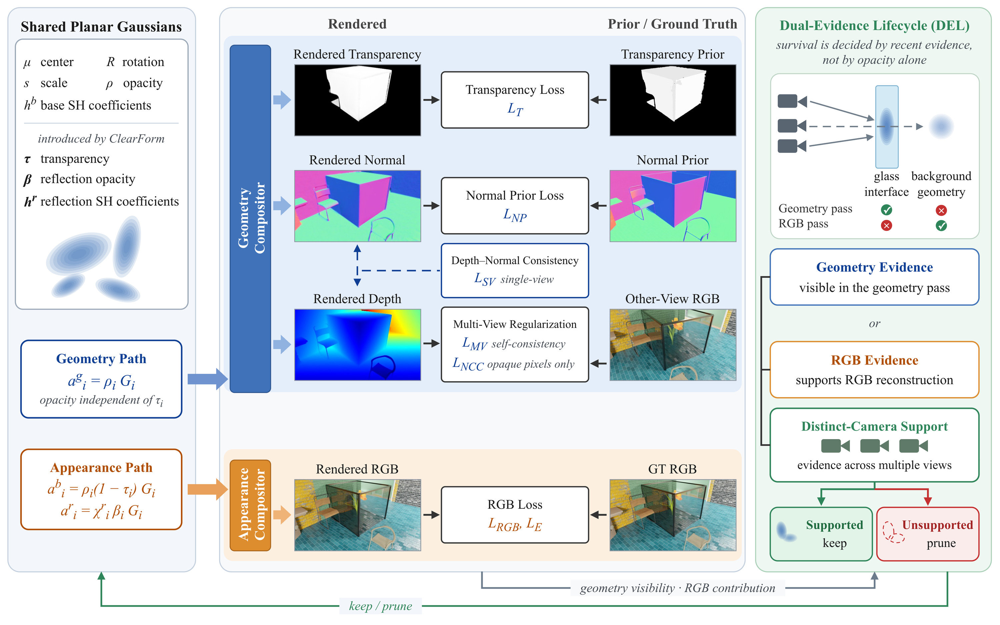
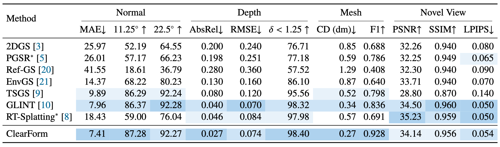
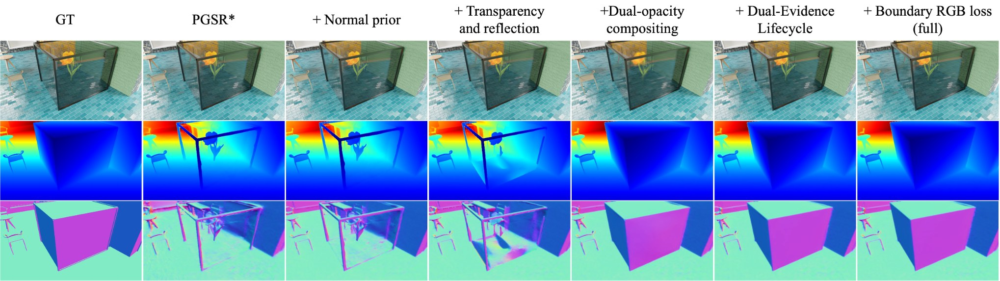
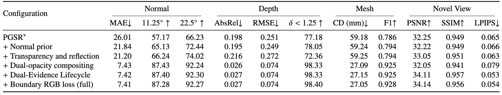

Abstract
Transparent-interface reconstruction must recover glass surfaces even when most observed color comes from the scene behind them. We present ClearForm, a shared-planar-Gaussian method for jointly reconstructing transparent interfaces and the appearance seen through them. We identify and analyze the Geometry–Appearance Compositing Dilemma (GACD): when the same transparency-dependent alpha controls both color and geometry, revealing the background can weaken a transparent surface's contribution to geometric reconstruction. We derive its effect on plane-based depth estimation, identify a mechanism that can weaken geometric learning, and quantify the loss of interface support through controlled comparisons. To address this conflict, we develop geometry-preserving dual-opacity surface reconstruction. Shared planar Gaussians retain interface contributions in geometry compositing while modeling transmission and sparse reflection in RGB, supported by transparency-aware geometric constraints. To manage the different primitive-visibility requirements of these compositors, we introduce Dual-Evidence Lifecycle (DEL), which retains Gaussians supported by multi-view geometry or RGB reconstruction evidence. On 3D-FRONT-T, ClearForm achieves 27.05 mm Chamfer distance (CD) and 0.928 F1, compared with 59.18 mm CD for our PGSR reproduction and the reported 34 mm CD and 0.836 F1 for GLINT. On TransLab, it achieves 1.65 mm CD, 0.963 F1, and 40.14 dB PSNR. In matched ablations, dual-opacity compositing reduces CD from 59.25 to 27.09 mm, while DEL improves PSNR by 2.06 dB.
Method

Overview of ClearForm. Shared planar Gaussians feed separate geometry and appearance compositors, preserving the transparent interface in geometric rendering while reproducing transmitted color and reflection. Transparency-aware PGSR constraints and priors supervise geometry; image losses supervise appearance. Dual-Evidence Lifecycle (DEL) uses visibility in geometric rendering and estimated RGB-loss changes across distinct recently sampled camera views to guide primitive survival.
Comparison on 3D-FRONT-T
Quantitative results

3D-FRONT-T reconstruction and novel-view synthesis. Five-scene means. Unstarred baseline scores are quoted from GLINT; * denotes a local reproduction.
Ablation Study

Cumulative ablation on 3D-FRONT-T. Dual-opacity compositing restores the transparent interface left distorted by transparency and reflection modeling under shared opacity. From left to right, the columns progress from ground truth and PGSR to the full model; rows show RGB, depth, and normals.

Cumulative ablation on 3D-FRONT-T. Each row adds one component to the preceding configuration. MAE is in degrees, accuracies in percent, and CD in mm.
More Results
BibTeX
@article{lee2026clearform,
title = {ClearForm: Shared-Surface Gaussian Splatting for Transparent and Opaque Scenes},
author = {Lee, Hajeong and Park, Jong-Il},
journal = {arXiv preprint arXiv:2611.10370},
year = {2026}
}